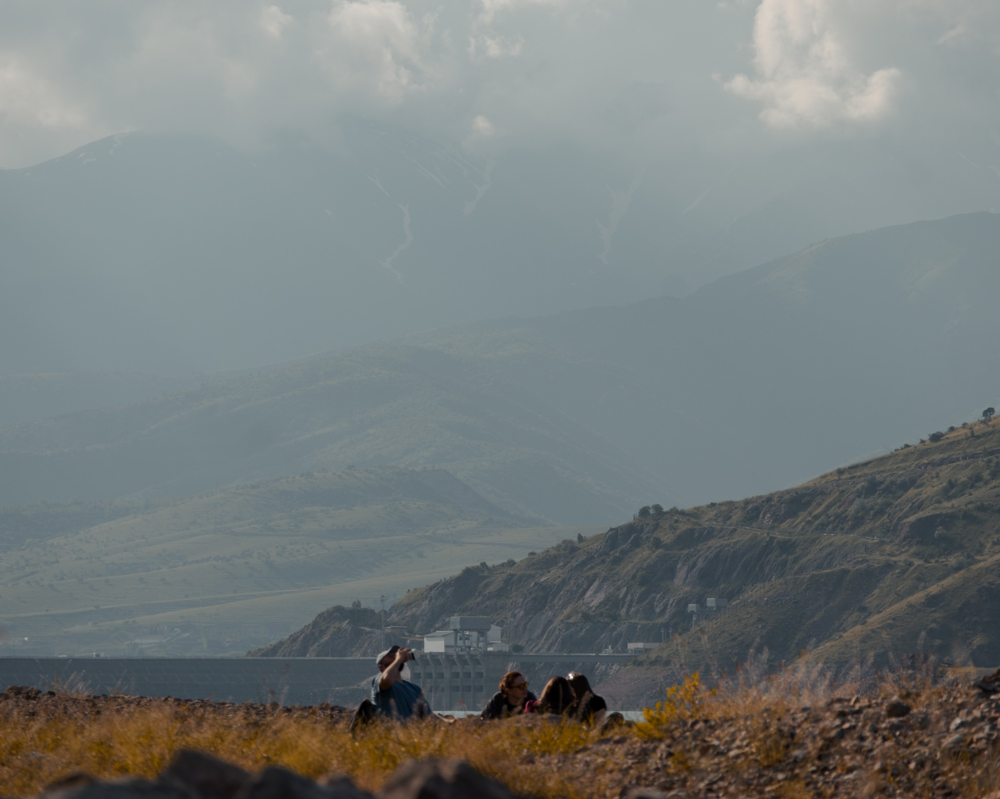

АВТОРСКИЙ ВЗГЛЯД
Всё начинается
со света.
Люди, места и мгновения.
Фотографии о том, что хочется сохранить.
Разные истории.
Один внимательный взгляд.
ПОРТФОЛИО
Избранные работы.
От студийной тишины
до открытых горизонтов.

Свет меняется. Истории остаются.

МЕСТО ДЛЯ ПАУЗЫО ПОДХОДЕ
Увидеть больше
в обычном.
Портрет — это взгляд и жест. Репортаж — движение жизни. Путешествие — ощущение места.
Эта подборка объединяет разные сюжеты через свет, настроение и внимание к деталям. Можно начать с любого кадра — и найти свою историю.
Вернуться к фотографиям